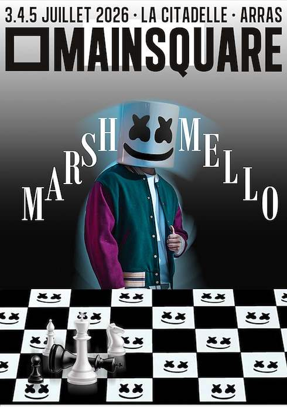

01 / DESIGNDESIGN GRAPHIQUE · PHOTOSHOP
Affiche Marshello
Création et retouche d'une affiche de concert pour le festival Main Square Arras. Un travail autour de la composition, de la hiérarchie visuelle et de l'ambiance.
Découvrir le projet ↗